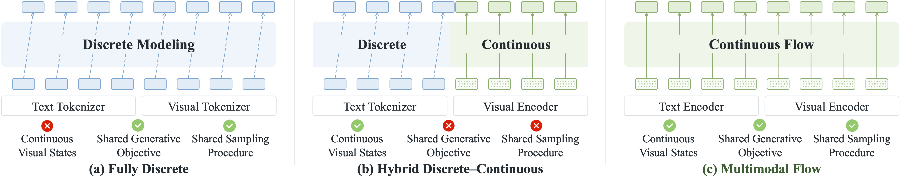
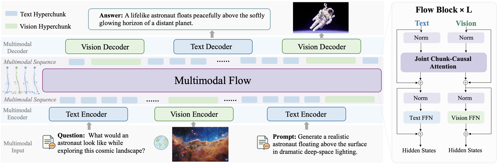
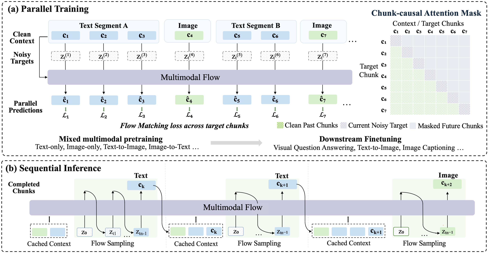
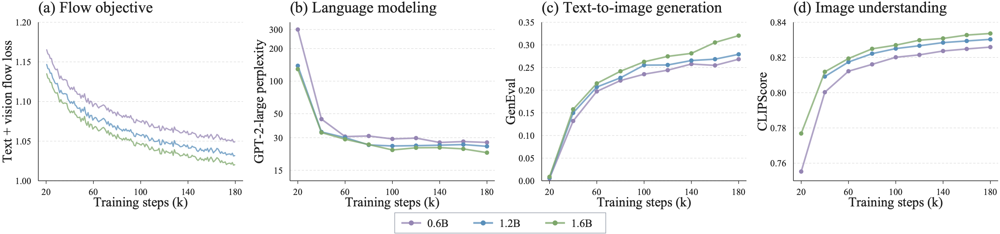
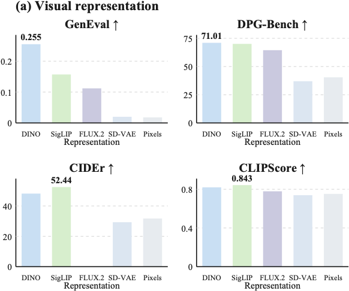
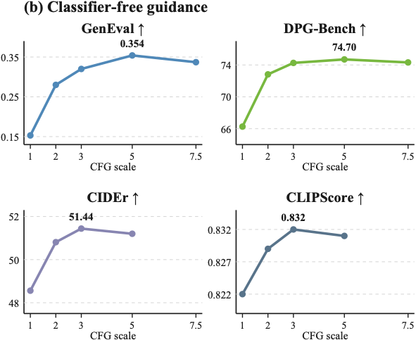

TL;DR Multimodal Flow removes discrete tokens from the generative process entirely. Text blocks and images both become continuous hyperchunks, and a single Flow Matching vector field generates each chunk conditioned on the chunks before it. Same objective, same sampler, same backbone — for language and for vision. Tasks differ only in the order and modality of the chunks, never in the model — which is also why the formulation does not stop at two modalities.
The compromise we wanted to avoid
Unified multimodal models have to answer an awkward question: language is an ordered sequence of discrete symbols, images are dense continuous grids. If one model is going to generate both, something has to give.
Today's systems give in one of two places. Fully discrete models quantize images into visual tokens so both modalities live in one categorical sequence — elegant, but now visual fidelity is capped by the tokenizer, and detail it discards is simply unavailable to the model downstream. Hybrid discrete–continuous models keep visual states continuous and bolt diffusion or flow onto an autoregressive language model — fidelity is preserved, but the backbone is now serving two different objectives and two different sampling procedures that happen to share parameters.
Neither gives you all three of the properties you would actually want. Pick a paradigm:
| Property | Fully discrete | Hybrid | Multimodal Flow |
|---|---|---|---|
| Continuous visual statesno quantization bottleneck | ✗ | ✓ | ✓ |
| Shared generative objectiveone loss for both modalities | ✓ | ✗ | ✓ |
| Shared sampling procedureone decoding mechanism | ✓ | ✗ | ✓ |
Click a paradigm to isolate its column. Fully discrete models buy a shared process by paying with a quantization bottleneck; hybrids buy fidelity by paying with two objectives.

So the question this work asks is simple: can language and vision share one generative process without being forced into one homogeneous representation? Our answer has four moving parts — a generative unit, an ordering, an objective, and one split inside the backbone — plus two consequences that fall out of them for free. The rest of this page walks through them in that order.
1 The generative unit: hyperchunks
A token is the wrong unit for this. Generating an image one patch at a time throws away the reason continuous visual models work; generating a whole paragraph in one shot throws away the sequential structure of language. We want something in between, and we want the same kind of thing for both modalities.
A hyperchunk (or just chunk) is one atomic act of generation. Text is cut into contiguous blocks of B = 8 tokens; each block is one chunk. An image is one chunk — all 256 positions of it. Inside a chunk, positions are modeled jointly; between chunks, the model is causal. That one asymmetry is what lets the same model be sequential at the level of events and parallel inside them.
How a chunk is built
a 16 × 16 grid of patch embeddings — kept together as a single chunk
Both encoders — and both decoders — stay frozen throughout pretraining and finetuning. They are the interface to text and pixels; the only thing that learns is the flow backbone operating on continuous states. When we say the model is fully continuous, this is precisely what we mean: the trainable generative process never touches a discrete symbol.
2 Chunk-causal factorization
Once everything is a chunk, a multimodal sequence is just an ordered list 𝒞 = (c1, …, cK), and the joint distribution factorizes the obvious way:
Note what this is not: it is not token-level autoregression, and it is not a joint denoiser over the whole sequence. Attention is causal across chunk boundaries and bidirectional within a chunk. Chunk order and target modality come from the task, so the same backbone runs under any multimodal context you care to define.
Chunk-causal attention mask
hover or tap a row- clean past chunks — full context
- current noisy target — bidirectional inside
- future chunks — masked
The sequence here is text A (c1–c3), an image (c4), text B (c5–c6) and another image (c7) — exactly the interleaved case. Hover a row to see what that target may look at.
Because the hidden states of completed chunks never depend on future chunks, this mask is also what makes KV caching work at inference: keys and values of the clean prefix are computed once and reused across every sampling step of the current chunk.
3 One objective, both modalities
Here is the part that makes the whole thing cohere. A target chunk — text or image, it does not matter — is perturbed along the same linear probability path between noise and data:
The backbone sees the noisy target and the clean prefix, and predicts the clean endpoint x̂θ, which is converted into a velocity and matched against the true one. One loss, averaged over every valid position of every target chunk in the batch:
Drag the slider below. The left panel is a text chunk, the right panel is a visual chunk, and they are on the same path at the same t. Nothing about the objective knows which is which.
The same path, both modalities
8 token positions, resolving out of Gaussian noise in T5 embedding space.
256 positions on a 16 × 16 grid, on the same probability path.
Illustrative: the real trajectory lives in embedding space and is rendered only at the end by the frozen decoders. The point is structural — one path, one objective, one t.
Two practical details worth naming. Timesteps are sampled independently per chunk from a shifted logit-normal distribution (α = 8 for image targets, α = 6 for text), so a single sequence trains many noise levels at once. And the velocity conversion clamps the denominator at max(1 − t, 0.05), which is what keeps the clean endpoint numerically well behaved.
A pleasant consequence of sharing the formulation: classifier-free guidance works in both directions. The same guidance equation that sharpens text-to-image generation also sharpens image-conditioned text generation — you simply drop the conditioning chunks and extrapolate. We know of no equivalent knob in a discrete language decoder.
4 Share interaction, not computation
A shared objective does not mean a uniformly shared network. Text embeddings and visual embeddings have genuinely different statistics, and squashing them through identical machinery costs you something. The design rule we settled on is narrow and, we think, transferable: share the parts that mix modalities, specialize the parts that process them.

Attention is where cross-modal information actually moves, so it is joint and its projections are shared. The feed-forward networks are where per-modality representation statistics get absorbed, so they are separate. Four parameter-matched configurations, 50B pretraining tokens each:
| Attn. projection | FFN | Text PPL ↓ | GenEval ↑ | DPG ↑ | CIDEr ↑ | CLIPScore ↑ |
|---|---|---|---|---|---|---|
| Specific | Specific | 28.09 | 0.255 | 71.01 | 48.14 | 0.820 |
| Specific | Shared | 29.67 | 0.233 | 70.82 | 47.31 | 0.820 |
| Shared | Specific | 27.43 | 0.226 | 71.04 | 47.91 | 0.820 |
| Shared | Shared | 28.35 | 0.237 | 69.70 | 42.02 | 0.788 |
Sharing the attention projections is roughly free — the top and bottom halves trade wins. Sharing the FFNs is not: the last row loses 6 CIDEr and 0.03 CLIPScore, and the damage lands squarely on image-conditioned text generation. Highlighted row is the configuration MF-1 uses.
5 Tasks are just chunk orders
This is the payoff of the previous four sections, and the part we would most like a reader to take away. Once a task is nothing but a sequence of chunks with some of them marked as targets, the distinction between pretraining tasks and downstream tasks mostly evaporates. Text-only language modeling, image generation, captioning, VQA — same backbone, same objective, same sampler. Only the strip changes.
One formulation, many tasks
pick a taskMixed pretraining is then not a special recipe, it is just sampling a task τ from a mixture and letting the same flow loss apply to whatever chunk sequence it produces. The model picks up unimodal distributions and bidirectional cross-modal conditionals from the start, rather than acquiring vision as a later bolt-on.
Finetuning changes the data and the sequence shape. It does not change the interface, the factorization, or the loss. Which raises the question §7 takes up: if a task is only a chunk sequence, what else could a chunk be?
6 Parallel training, sequential generation
A causal factorization normally forces you to choose between training efficiency and a meaningful generation order. The chunk-causal mask lets us keep both. During training, every chunk in a sequence can be a target simultaneously: each gets its own noisy view and its own sampled timestep, and a perturbed target attends to the clean prefix but never to its own clean counterpart. All of it resolves in one forward pass.
Training vs. inference

For throughput, independent examples are packed into physical sequences of up to 32,768 positions, with sequence identifiers in the mask preventing any attention across example boundaries. At inference the picture inverts: chunks are produced one at a time, each by integrating the vector field from t = 0 to t = 1, and each completed chunk joins the KV cache before the next begins.
7 What the formulation admits
Notice what the backbone never learns. It does not learn "text" and it does not learn "images". It learns a vector field over chunks — ordered groups of continuous positions, generated jointly on the inside and causally across. Language and vision are the two instances we happened to train. Neither is privileged by the formulation.
Which invites an obvious test: what would it actually cost to add a third?
What you add, per modality
- Encoder frozen, into any continuous space
- Chunking rule what counts as one chunk
- Modality FFN one block per layer
- Decoder frozen, back out to the raw signal
Local, swappable, small.
What stays byte-for-byte the same
- Chunk-causal factorization & mask
- Joint attention across all chunks
- The Flow Matching objective
- Velocity conversion & timestep sampling
- Sequential sampler, CFG, KV cache
- Sequence packing
Everything carrying generative semantics.
And what you never need: a second objective to balance · a different sampler · a vocabulary to extend · a tokenizer to train · a codebook to size
The one genuine design decision is the chunking rule, and it is a question worth asking of any signal: what is one coherent act of generation here? Language answers "a short run of tokens." Images answer "the whole grid at once." Most other modalities have an answer just as natural:
trained in MF-1 · admitted by the formulation, not trained — these are structural arguments, not results.
Compose a sequence
Here is the claim made testable. Build any sequence you like out of the chunk types above and mark which chunks are targets. The attention mask underneath is derived from whatever you build — it is not a set of hand-drawn examples. Every sequence you can construct is a valid training example for the same loss.
The badge keeps us honest, and distinguishes three things that are easy to conflate: an objective MF-1 was actually trained on; an arrangement of familiar modalities that we simply never ran; and a sequence involving a modality the model has never seen. Only the first is evidence.
Sequence composer
Click a chunk to flip it between context and target; click its × to remove it.
Where this stops being speculation
We want to be precise about the status of this section, because it is the easiest place on this page to overclaim. Everything above is an argument about structure: the formulation does not forbid these sequences, and adding a modality does not perturb the generative core. That is not the same as evidence that they work. Four places where we expect the argument to meet friction:
- The codec ceiling applies to every new modality. A chunk type is only as good as the frozen encoder–decoder pair behind it. Modalities without a strong pretrained continuous codec inherit that weakness directly, and the flow cannot repair it.
- Long sequences are untested. Joint attention is quadratic in total positions, and a single image already costs 256. Minutes of video, or a long interleaved document, is a different regime from anything we trained — likely needing sparsity or hierarchy that we have not studied.
- Low-dimensional targets may need a different noise schedule. The shifted logit-normal timestep distribution was tuned for 512- and 1152-dimensional embeddings. A short control horizon is a far smaller, differently shaped target; we would expect α to need retuning, and possibly more than that.
- Nothing explicitly ties neighbouring chunks together. Coherence across chunks comes only through causal context. For text that has been enough; for temporally continuous signals like video or audio, it is an open question whether it is.
None of this is settled. But the reason we find the formulation interesting is that these are questions about data and tuning, not about architecture. Adding a modality here does not require inventing a way for it to coexist with the others — that part is already done.
What we observe
A note on scale. MF-1 is pretrained from scratch on 150B tokens. That is small — one to two orders of magnitude below the budgets behind the models it gets compared against, and far below any serious LLM or VLM. We are not claiming a leaderboard position, and you should not read these numbers as one. What we are checking is narrower and, for a new paradigm, more useful: does a fully continuous chunk-based flow behave like a sound pretraining objective?
The objective behaves
Under one mixed-pretraining protocol at 0.6B, 1.2B and 1.6B, all four quantities move in the right direction together and keep moving: the flow loss falls, language perplexity falls, and both text-to-image and image-understanding scores rise. Capacity helps, and it helps more as training continues — the curves are not crossing or flattening into each other.

The comparison we actually trust
Cross-paper leaderboards confound architecture with data, schedule and initialization. So the measurement we weight most is the controlled one: three paradigms, matched data, matched optimization schedule, matched trainable-parameter budget. The Transfusion-style hybrid is the sharpest reference point here, since it shares MF-1's visual pathway and backbone design and differs essentially in using autoregressive text modeling.
| Architecture | Type | GenEval ↑ | GQA ↑ | VQAv2 ↑ | MMBench ↑ | SEEDB ↑ |
|---|---|---|---|---|---|---|
| Multimodal Flow | Fully continuous | 0.713 | 55.60 | 69.03 | 46.74 | 51.85 |
| Transfusion-style | Discrete–continuous hybrid | 0.669 | 52.81 | 68.49 | 33.68 | 31.31 |
| Chameleon-style | Fully discrete | 0.374 | 45.83 | 56.37 | 38.40 | 42.40 |
Matched data, optimization schedule and trainable parameters. The gap on the understanding benchmarks is wider than on generation, which is the opposite of what we expected going in.
Pretraining transfers
The other question a new paradigm has to answer is whether its pretraining actually buys anything downstream, or whether the finetuning data is doing all the work. Holding the 1.6B architecture fixed and matching the baseline's downstream tokens against the pretrained model's combined pretraining-plus-finetuning budget, mixed pretraining is worth a great deal — SEED-Bench moves from 31.6 → 62.4 and MMBench from 36.0 → 67.2 against a randomly initialized flow backbone. Same tokens, very different model.
Two design findings


Headline benchmark numbers, for completeness
The 1.6B MF-1 checkpoint scores 0.821 on GenEval, 83.44 on DPG-Bench, and averages 75.3 across VQAv2, MMBench and POPE. Among unified models it is competitive on generation and holds up on understanding despite training from scratch on 150B tokens, consistently beating comparable from-scratch unified models such as Muddit and D-DiT. We list these because reviewers and readers reasonably want them — not because they are the argument. The argument is the formulation above.
Limitations & outlook
- Training scale. 150B tokens is a proof of concept, not a converged model. Every trend on this page is measured inside that budget, and we cannot tell you where the curves go at 10×.
- The frozen codecs are a ceiling. The flow can only be as faithful as the image decoder can reconstruct and the text decoder can detokenize. Anything SigLIP2 or T5-small does not encode is simply not reachable, no matter how good the backbone gets.
- Fixed visual geometry. One resolution, 224 × 224, one chunk of 256 positions per image. Variable resolution, multi-crop and higher-detail regimes are unexplored.
- Short interleaving. We trained short text/image sequences — not long interleaved documents, and not video, audio, or control. §7 argues that the formulation admits them and spells out where we expect that argument to run into trouble; none of it is demonstrated here.
The claim we want to defend is modest and specific: continuous, chunk-based embedding flow is a workable third option for unified multimodal modeling — one that keeps continuous visual states without giving up a shared generative process. Whether it is the right option at scale is an open question, and an expensive one. We have released the code and the model weights so that it does not have to stay open.
BibTeX
@article{tao2026multimodalflow,
title = {Multimodal Flow: Unified Flow Modeling of Language and
Vision in Embedding Spaces},
author = {Tao, Hongyuan and Wang, Xinggang and Zhu, Lianghui and
Li, Yongkang and Wei, Yunchao and Feng, Bin and
Chen, Shaoyu and Zhang, Qian and Huang, Chang and Yu, Kai},
journal = {arXiv preprint arXiv:2609.40362},
year = {2026}
}Acknowledgments. We thank Lunbin Zeng and Shuai Zhang for valuable discussions and insightful feedback that contributed to this work.